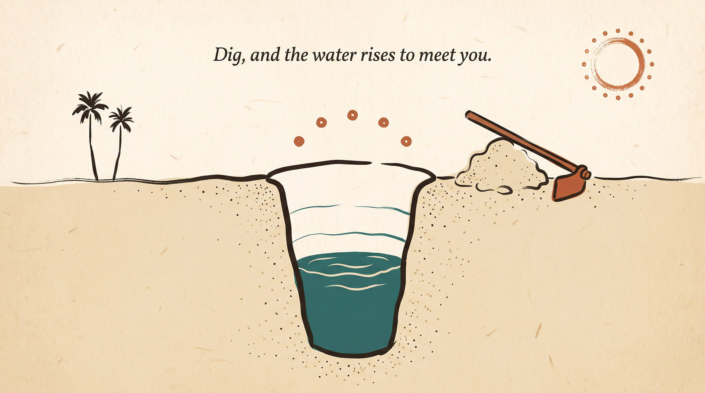
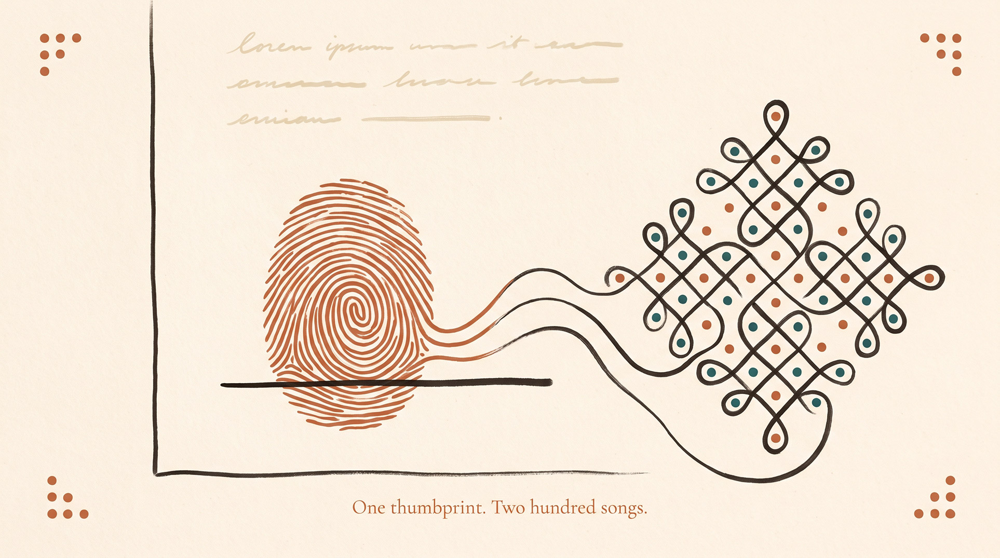
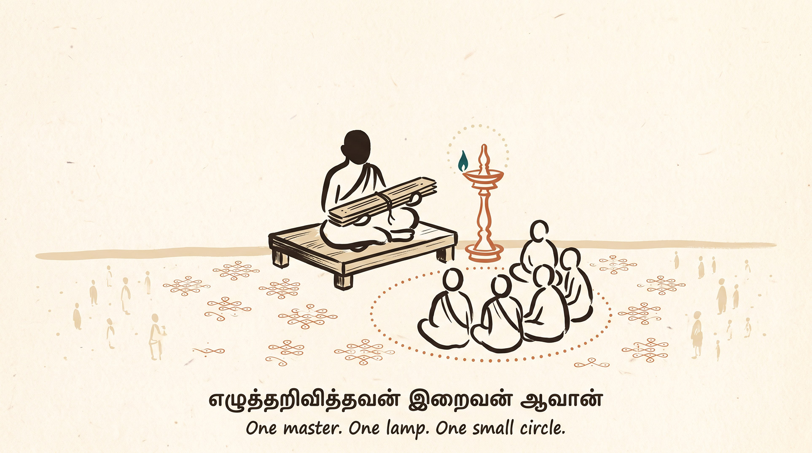
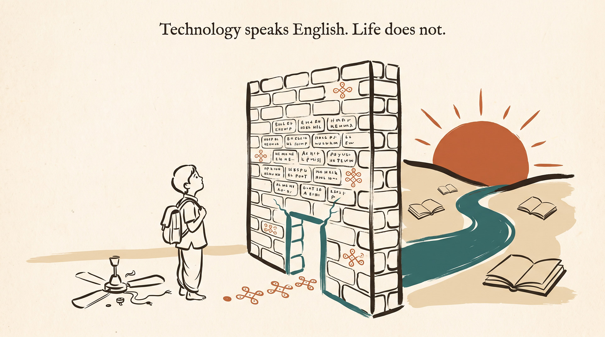
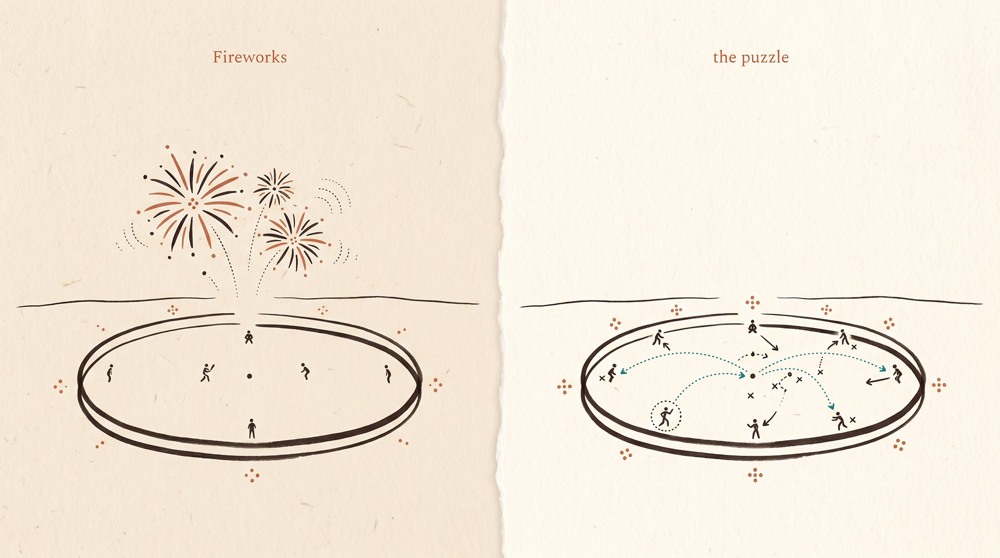
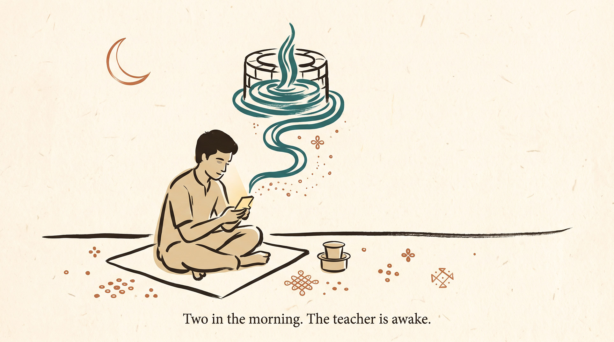
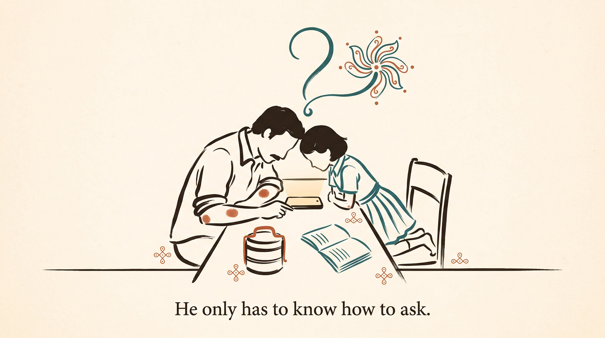
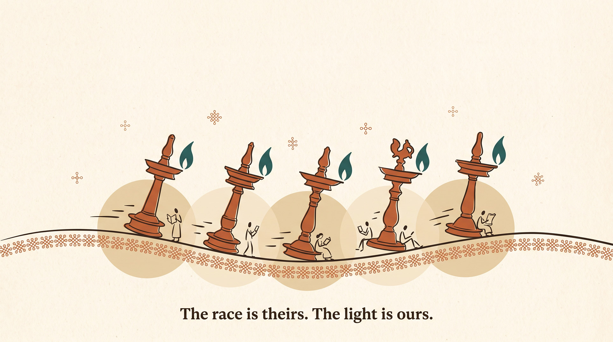
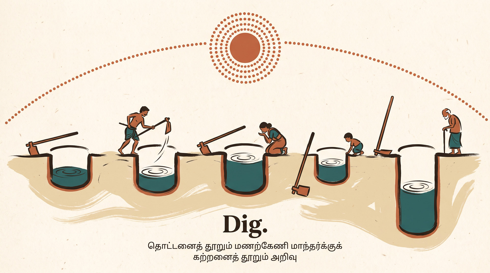

The Sand Wellமணற்கேணி
There is a Kural that has waited two thousand years for this exact moment.சரியாக இந்தக் கணத்திற்காகவே இரண்டாயிரம் ஆண்டுகளாகக் காத்திருந்த ஒரு குறள் உண்டு.
கற்றனைத் தூறும் அறிவு திருக்குறள் 396 · கல்வி அதிகாரம்Thirukkural 396 · Chapter 40: Education Dig a well in sand, and water rises to meet your digging. Learn, and wisdom rises to meet your learning. மணலில் தோண்டத் தோண்ட நீர் ஊறும். கற்கக் கற்க அறிவு ஊறும்.
Valluvar was not writing a pretty line. He was describing a law. The water is always there, under the sand, waiting. How much you get to drink depends on how deep you are able to dig.வள்ளுவர் இதை அழகுக்காக எழுதவில்லை. ஒரு விதியை எழுதினார். நீர் எப்போதும் அங்கேதான் இருக்கிறது, மணலுக்கு அடியில், காத்துக்கொண்டு. எவ்வளவு நீரைப் பருகுகிறோம் என்பது, நாம் எவ்வளவு ஆழம் தோண்டுகிறோம் என்பதைப் பொறுத்தது.
This essay is about the digging.இந்தக் கட்டுரை அந்தத் தோண்டுதலைப் பற்றியது.
Because here is a quiet truth that sits under every library and every school in the world. The water was never the problem. The knowledge was always there. What we could actually take from it, drink from it, live on, was only as much as we could understand.ஏனெனில் உலகின் ஒவ்வொரு நூலகத்துக்கும், ஒவ்வொரு பள்ளிக்கும் அடியில் ஒரு அமைதியான உண்மை இருக்கிறது. நீர் ஒருபோதும் பிரச்சனை இல்லை. அறிவு எப்போதும் அங்கேதான் இருந்தது. அதிலிருந்து நாம் எடுத்தது, பருகியது, வாழ்ந்தது எல்லாமே, நாம் எந்த அளவு புரிந்துகொண்டோம் என்பதைப் பொறுத்து மட்டுமே அமைந்தது.
What we can comprehend is what we can consume.நாம் புரிந்துகொள்வதே நாம் நுகர்வது.
And for most of human history, the thing that helps us understand more, a patient someone who explains it again, slower, in our own words, in our own language, belonged to very few people.மனித வரலாற்றின் பெரும்பகுதியில், நமக்கு மேலும் புரிய வைக்கும் ஒன்று, பொறுமையாக, மெதுவாக, நம் சொந்த வார்த்தைகளில், நம் மொழியில் மறுபடி விளக்கும் ஒருவர், மிகச் சிலருக்கு மட்டுமே கிடைத்தார்.
AI did not create new knowledge. It changed who gets to understand the knowledge we already had.AI புதிய அறிவை உருவாக்கவில்லை. ஏற்கனவே இருந்த அறிவை யார் புரிந்துகொள்ளலாம் என்பதைத்தான் அது மாற்றியது.
That is the story that just changed.அந்தக் கதைதான் இப்போது மாறியிருக்கிறது.
The Woman Who Ran a House She Could Not Readபடிக்கத் தெரியாமல் வீட்டை நடத்திய பெண்
She could hold four festivals, two weddings, one funeral, and a full year of household accounts in her head. She knew which vendor cheated on rice, and by how many rupees. She could recite two hundred songs and place a proverb into a conversation like a surgeon placing a stitch.நான்கு திருவிழாக்கள், இரண்டு கல்யாணங்கள், ஒரு இழவு, ஒரு வருடத்து வீட்டுக் கணக்கு என எல்லாமே அவள் தலையிலேயே. எந்த வியாபாரி அரிசியில் எத்தனை ரூபாய்க்கு ஏமாற்றுகிறான் என்பது அவளுக்குத் தெரியும். இருநூறு பாட்டுகள் மனப்பாடம். ஒரு பழமொழியை உரையாடலில் சரியாக வைப்பாள், ஒரு அறுவை மருத்துவர் தையல் போடுவது போல.
She could not read the papers of the land she was born on.அவள் பிறந்த மண்ணின் பத்திரத்தை அவளால் படிக்க முடியவில்லை.
When it was time to sign, she pressed her thumb.கையெழுத்து போட வேண்டிய நேரம் வந்ததும், கட்டை விரலை அழுத்தினாள்.
She was the grandmother who ran the house.அந்த வீட்டை நடத்திய பாட்டி அவள்தான்.

Think about what that thumbprint means. The intelligence was never missing. It was overflowing. What was missing was one key, reading, that could turn all that intelligence into something she could use beyond her doorstep. The bank. The court. The newspaper. The medicine label. All of it sat one inch beyond her reach.அந்த ரேகை என்ன சொல்கிறது என்று யோசியுங்கள். புத்தி குறையவே இல்லை. நிரம்பி வழிந்தது. இல்லாமல் போனது ஒரே ஒரு சாவி, எழுத்து. அந்தச் சாவி இருந்திருந்தால், அந்தப் புத்தி வீட்டு வாசலைத் தாண்டியும் போயிருக்கும். வங்கி. நீதிமன்றம். செய்தித்தாள். மருந்துச் சீட்டு. எல்லாமே ஒரு அங்குல தூரத்தில் நின்றன.
Avvaiyar said it plainly.ஔவையார் இதைத் தெளிவாகவே சொன்னார்.
Notice the sand, again. In Valluvar's line, sand hides the water. In Avvaiyar's, it measures how little of it we ever hold in one hand. Two poets, centuries apart, reaching for the same sand to describe the same pain.மீண்டும் மணலைப் பாருங்கள். வள்ளுவரின் வரியில், மணல் நீரை மறைக்கிறது. ஔவையின் வரியில், நாம் கையில் பிடிப்பது எவ்வளவு சிறியது என்று அளக்கிறது. இரு புலவர்கள், பல நூற்றாண்டுகள் இடைவெளியில், ஒரே மணலை எடுத்து ஒரே வலியைச் சொன்னார்கள்.
For most people who have ever lived, that fistful was small and the world was huge. And the gap between the two was not a gap in ability. It was a gap in access. She was not less. She was less served.வாழ்ந்த பெரும்பாலோருக்கு, இந்தக் கைப்பிடி சிறியது, உலகம் பெரியது. இரண்டுக்கும் இடையிலான இடைவெளி திறமையின் இடைவெளி இல்லை, அது வாய்ப்பின் இடைவெளி. அவள் குறைந்தவள் இல்லை. அவளுக்குக் கிடைத்ததுதான் குறைவு.
The world was full. She stood in front of it, and could take only what she was allowed to understand.உலகம் நிறைந்திருந்தது. அவள் அதன் முன் நின்றாள். எதைப் புரிந்துகொள்ள அனுமதிக்கப்பட்டாளோ, அதை மட்டுமே எடுத்துக்கொண்டாள்.
The One Master in the Villageஊருக்கு ஒரே வாத்தியார்
For centuries, the thing that grew our understanding was a person. Not a book. A person who could take what the book said and say it again, at your speed, for your confusion.நூற்றாண்டுகளாக, புரிதலை வளர்த்தது ஒரு மனிதர். புத்தகம் இல்லை. புத்தகம் சொன்னதை உங்கள் வேகத்தில், உங்கள் குழப்பம் தீர, மறுபடி சொல்லக்கூடிய ஒரு மனிதர்.
And that person was rare.அந்த மனிதர் அரிதானவர்.
There was one master in the village, if there was one at all. There was one bundle of palm leaves, kept dry, kept close, read aloud to a chosen circle. Whether you got near it depended on your caste, your money, and where you happened to be born. Learning did not travel to you. You travelled to it, if they let you in.ஊருக்கு ஒரே வாத்தியார், அதுவும் இருந்தால். ஒரே ஒரு ஓலைச்சுவடிக் கட்டு, ஈரம் படாமல், பத்திரமாக, தேர்ந்தெடுக்கப்பட்ட சிலருக்கு மட்டுமே வாசிக்கப்பட்டது. அதன் அருகில் போக முடியுமா என்பது உங்கள் சாதி, உங்கள் பணம், நீங்கள் பிறந்த இடம் இவற்றைப் பொறுத்தே அமைந்தது. கல்வி உங்களிடம் வரவில்லை. நீங்கள் தான் அதனிடம் போனீர்கள், அவர்கள் உங்களை அனுமதித்தால்.

This is the real villain of the human story. Not stupidity. Shortage. Too few teachers. Too few translators. Too few mentors. Too few people with the time and patience to explain the hard thing one more time.மனிதக் கதையின் உண்மையான வில்லன் இது தான். முட்டாள்தனம் இல்லை. பற்றாக்குறை. வாத்தியார்கள் பற்றாக்குறை. மொழிபெயர்ப்பாளர்கள் பற்றாக்குறை. வழிகாட்டிகள் பற்றாக்குறை. கடினமான ஒன்றை இன்னொரு முறை விளக்கும் பொறுமை உள்ளவர்களின் பற்றாக்குறை.
The most serious form of this had a name and a price. The private tutor. When a king wanted his son to think like an emperor, he did not send him to a school. He bought a philosopher. A raja kept his court poets close, the way a modern company keeps its best engineers. One person's full attention, from a brilliant mind, was the most expensive thing in the education of the world. So it went only to people who could already afford everything else.இதன் மிகத் தீவிர வடிவத்துக்கு ஒரு பெயரும் விலையும் இருந்தது. தனி ஆசிரியர். ஒரு அரசன் தன் மகன் பேரரசனாக யோசிக்க வேண்டும் என்று விரும்பினால், அவனைப் பள்ளிக்கு அனுப்பவில்லை. ஒரு தத்துவஞானியை விலைக்கு வாங்கினான். இன்று ஒரு நிறுவனம் தன் சிறந்த பொறியாளர்களைத் தன்னோடு வைத்திருப்பது போல, ராஜா தன் அவைப் புலவர்களை அருகில் வைத்திருந்தான். ஒரு சிறந்த மூளையின் முழு கவனம் என்பது, உலகக் கல்வியிலேயே மிக விலை உயர்ந்த பொருள். அதனால் அது ஏற்கனவே அனைத்தையும் வாங்கக் கூடியவர்களுக்கே சென்றது.
Old Tamil has a line for what such a teacher meant. It began as the first line of the Vetrivetkai, a book of wisdom written by a Pandya king-poet a thousand years ago. Today, every Tamil child knows it by heart.இப்படிப்பட்ட ஆசிரியர் என்னவென்று பழந்தமிழ் ஒரு வரியில் சொல்கிறது. வெற்றிவேற்கையின் முதல் வரியாகப் பிறந்தது. ஆயிரம் ஆண்டுகளுக்கு முன் ஒரு பாண்டிய அரசக் கவிஞர் எழுதியது. இன்று ஒவ்வொரு தமிழ்க் குழந்தைக்கும் இது மனப்பாடம்.
Sit with how heavy that is. To be taught, personally, patiently, was so rare and so life-changing that the teacher was raised almost to the level of god. You do not say that about something ordinary. You say it about something you were lucky to receive and afraid to lose.அது எவ்வளவு கனமானது என்று சற்று யோசியுங்கள். தனியாக, பொறுமையாகக் கற்பிக்கப்படுவது எவ்வளவு அரிதாக, வாழ்க்கையையே மாற்றுவதாக இருந்தது என்றால், ஆசிரியர் கிட்டத்தட்ட கடவுள் நிலைக்கு உயர்த்தப்பட்டார். சாதாரண ஒன்றை நாம் அப்படிச் சொல்ல மாட்டோம். கிடைத்ததே பாக்கியம், இழந்துவிடுவோமோ என்ற பயம், அப்படிப்பட்ட ஒன்றைத்தான் அப்படிச் சொல்வோம்.
Understanding had a narrow door. And the door was a human being, who could be in only one place, teaching one small room, for one lifetime.புரிதலுக்கு ஒரு குறுகிய கதவு இருந்தது. அந்தக் கதவு ஒரு மனிதர். அவர் ஒரே இடத்தில்தான் இருக்க முடியும். ஒரு சிறிய அறைக்குத்தான் சொல்லிக்கொடுக்க முடியும். ஒரே ஒரு ஆயுள்தான்.
The Wall Made of Wordsசொற்களால் ஆன சுவர்
Even when the door opened and a teacher appeared, one wall usually remained standing. Language.கதவு திறந்து ஆசிரியர் வந்த பிறகும், ஒரு சுவர் எஞ்சியிருந்தது. மொழி.
A boy in a Chennai neighborhood is quick. Everyone says so. He takes apart the ceiling fan and puts it back with a spare screw and an opinion. But the good material, the real explanations, the deep stuff, comes in English. So he hits the wall at the exact moment he is ready to fly. The idea is not too hard for him. The idea is in a language that was never his.சென்னையில் ஒரு பையன். படுசுட்டி. எல்லாரும் அப்படித்தான் சொல்வார்கள். மின்விசிறியைப் பிரித்து, ஒரு ஸ்பேர் ஸ்க்ரூவையும் ஒரு சொந்தக் கருத்தையும் வைத்து, மறுபடி பொருத்துவான். ஆனால் நல்ல பாடங்கள், உண்மையான விளக்கங்கள், ஆழமான விஷயங்கள் என எல்லாமே ஆங்கிலத்தில் வருகின்றன. பறக்கத் தயாரான அந்தக் கணத்தில் சுவரில் மோதுகிறான். அந்தக் கருத்தைப் புரிந்துகொள்வது அவனுக்குக் கடினமானது இல்லை. அது அவனுடைய மொழியில் சொல்லப்படாததே பிரச்சினை.
A farmer holds a printout that could save his crop. The science is right. The science is also in words he cannot enter.ஒரு விவசாயி கையில் ஒரு தாள். அதில் அவன் பயிரைக் காப்பாற்றும் அறிவியல். அறிவியல் சரியானது. ஆனால் அவனால் நுழைய முடியாத சொற்களில் இருக்கிறது.
Here is the cruel part. The wall of language does not stop the weak thinkers. It stops the strong ones, who were simply born on the wrong side of a translation. Intelligence with no doorway turns into frustration. Curiosity with no entry slowly gives up.இதில் தான் கொடுமை. மொழிச்சுவர் மந்தமான மூளைகளை நிறுத்துவதில்லை. மொழிபெயர்ப்பின் தவறான பக்கத்தில் பிறந்த கூர்மையான மூளைகளைத் தான் அது நிறுத்துகிறது. வாசல் இல்லாத புத்தி எரிச்சலாக மாறுகிறது. நுழைவாயில் இல்லாத ஆர்வம் மெல்ல மெல்லச் சரணடைகிறது.
Technology speaks English.
Life does not.தொழில்நுட்பம் ஆங்கிலம் பேசுகிறது.
வாழ்க்கை பேசுவதில்லை.

For millions of people, understanding was blocked not by their minds but by their mother tongue. So the world stayed huge, and the fistful stayed small, for no reason that had anything to do with how much they could have understood.கோடிக்கணக்கானோருக்கு, புரிதலைத் தடுத்தது மூளை இல்லை, தாய்மொழி. உலகம் பெரியதாகவே இருந்தது, கைப்பிடி சிறியதாகவே இருந்தது. அவர்களால் எவ்வளவு புரிந்திருக்க முடியும் என்பதற்கும் இதற்கும் எந்தச் சம்பந்தமும் இல்லை.
Same Match, Different Gameஅதே ஆட்டம், வேறு பார்வை
Step back from schools and books for a moment. Understanding decides far more than education.பள்ளிகளையும் புத்தகங்களையும் சற்றுத் தள்ளி வையுங்கள். புரிதல் என்பது கல்வியை விட நிறையவே தீர்மானிக்கிறது.
Two people watch the same T20 Cricket match. One sees sixes, noise, and a scoreboard in a hurry. The other sees the leg-spinner saved for the new left-hander. The long boundary guarded by one quiet field change. A dot ball in the nineteenth over that is worth more than a boundary in the fifth. Same match. One is watching fireworks. The other is watching a puzzle being solved at full speed.இருவர் ஒரே T20 போட்டியைப் பார்க்கிறார்கள். ஒருவர் சிக்ஸர்களையும், சத்தத்தையும், ஸ்கோர்போர்டையும் பார்க்கிறார். இன்னொருவர், புது இடதுகை பேட்ஸ்மேனுக்காக லெக்-ஸ்பின்னரைக் காத்து வைத்திருப்பதை, ஒரே ஒரு அமைதியான ஃபீல்டிங் மாற்றத்தால் நீண்ட பவுண்டரி காக்கப்படுவதை, ஐந்தாவது ஓவரின் பவுண்டரியை விட, பத்தொன்பதாவது ஓவரின் டாட் பாலுக்கு மதிப்பு அதிகம் என்பதை எல்லாம் பார்க்கிறார். அதே போட்டிதான். ஒருவர் வாணவேடிக்கை பார்க்கிறார். இன்னொருவர் முழு வேகத்தில் அவிழ்க்கப்படும் புதிரைப் பார்க்கிறார்.

Take two people into the same museum. An archaeologist and a six-year-old. Stand them before the same artifact. The archaeologist sees kingdoms, trade routes, wars, a whole technology of clay and fire. The child sees an old pot. Nothing about the pot changed. Only the understanding changed. So what they took from it changed.இருவரை ஒரே அருங்காட்சியகத்துக்குக் கூட்டிப் போங்கள். ஒருவர் தொல்லியல் ஆய்வாளர். இன்னொருவர் ஆறு வயது குழந்தை. ஒரே பழம்பொருளின் முன் நிற்க வையுங்கள். தொல்லியல் ஆய்வாளர் ராஜ்ஜியங்களைப் பார்க்கிறார், வணிகப் பாதைகளை, போர்களை, களிமண்ணும் நெருப்பும் சேர்ந்த ஒரு முழு தொழில்நுட்பத்தை. குழந்தை ஒரு பழைய பானையைப் பார்க்கிறது. பானையில் எதுவும் மாறவில்லை. புரிதல் மட்டுமே மாறியது. அதனால் அவர்கள் எடுத்துச் சென்றதும் மாறியது.
Play the same film song to two listeners. One hears a nice tune. The other hears the raga underneath it, the place where the singer bends a note the way her guru once did, a small phrase quietly bowing to a song from fifty years ago. Same three minutes. One took home a tune. The other took home a hundred years of music.ஒரே சினிமாப் பாட்டை இருவருக்குப் போடுங்கள். ஒருவருக்கு இனிமையான மெட்டு. இன்னொருவருக்கு அதன் அடியில் ஓடும் ராகம், பாடகி தன் குரு வளைத்தது போல் ஒரு ஸ்வரத்தை வளைக்கும் இடம், ஐம்பது ஆண்டு முந்தைய பாட்டுக்கு அமைதியாகத் தலைவணங்கும் ஒரு சிறு இசைத்துணுக்கு. அதே மூன்று நிமிடங்கள். ஒருவர் ஒரு மெட்டை எடுத்துச் சென்றார். இன்னொருவர் நூறு ஆண்டு இசையை.
This is the wider law. We do not consume what is in front of us. We consume what we can understand of it. A painting, a contract, a diagnosis, a marriage, a market, a night sky. Each gives back exactly as much as you can understand of it. Not one drop more.இது தான் பரந்த விதி. நம் முன் இருப்பதை நாம் நுகர்வதில்லை. அதில் நாம் எதைப் புரிந்துகொண்டோமோ அதை மட்டுமே நுகர்கிறோம். ஓவியம், ஒப்பந்தம், மருத்துவ அறிக்கை, திருமணம், சந்தை, இரவு வானம். ஒவ்வொன்றும் நீங்கள் புரிந்த அளவே உங்களுக்குத் திருப்பித் தருகிறது. ஒரு துளி கூட அதிகம் இல்லை.
What we can comprehend is what we can consume.நாம் புரிந்துகொள்வதே நாம் நுகர்வது.
Which means the most valuable thing you can ever hand a person is not more things. It is a better pair of eyes.அதனால், ஒருவருக்கு நீங்கள் தரக்கூடிய மிக மதிப்பான பொருள், மேலும் பொருட்கள் இல்லை. இன்னும் நல்ல கண்கள்.
The Teacher in the Pocketபாக்கெட்டில் ஒரு ஆசிரியர்
Now the auto driver's son.இப்போது ஆட்டோ ஓட்டுநரின் மகன்.
He has a phone that cost eight thousand rupees, and a data pack that costs less than a cup of filter coffee a day. And on that phone, for free, is something that would have made a king cry with envy.எட்டாயிரம் ரூபாய் போன். நாள் ஒன்றுக்கு ஒரு டம்ளர் பில்டர் காபியை விடக் குறைந்த விலையில் டேட்டா பேக். அந்த போனில், இலவசமாக, ஒரு அரசனையே பொறாமையில் அழ வைக்கும் ஒன்று.
A tutor that never runs out of patience.பொறுமை தீராத ஒரு ஆசிரியர்.
He types: explain compound interest like I am twelve, and in Tamil. It does. He types: now explain it like I am an expert. It does that too, in the same breath, without a sigh, without making him feel small for asking. At two in the morning, when the one master in the village would have been asleep for six hours, it is awake. When the English wall rises, it walks him through the gate in his own language, and never even mentions the wall.அவன் டைப் செய்கிறான்: கூட்டு வட்டியை எனக்குப் பன்னிரண்டு வயது என்று நினைத்து, தமிழில் விளக்கு. அது விளக்குகிறது. அடுத்து: இப்போது நான் நிபுணன் என்று நினைத்து விளக்கு. அதையும் அதே மூச்சில் செய்கிறது. பெருமூச்சு விடவில்லை. கேட்டதற்காக அவனைச் சிறுமைப்படுத்தவில்லை. இரவு இரண்டு மணிக்கு, ஊரின் ஒரே வாத்தியார் தூங்கி ஆறு மணி நேரம் ஆன பிறகு, இது விழித்திருக்கிறது. ஆங்கிலச் சுவர் எழும்பும் போது, அவன் மொழியிலேயே வாசல் வழியாக அழைத்துச் செல்கிறது. சுவரைப் பற்றிப் பேசவே இல்லை.

Read that against everything before it.இதற்கு முன் சொன்ன எல்லாவற்றோடும் இதை வைத்துப் படியுங்கள்.
The intelligence the grandmother had, and could not release. The teacher the village could afford only one of. The language wall that stopped the quick boy at the door. All three, the locked door, the shortage, the wall, are beginning to crack. Against a thing that fits in a pocket, and asks nothing about your caste, your money, or your address.பாட்டிக்கு இருந்த, வெளியே வர முடியாத புத்தி. ஊருக்கு ஒன்றே ஒன்றாகக் கிடைத்த வாத்தியார். சுட்டிப் பையனை வாசலில் நிறுத்திய மொழிச்சுவர். மூன்றும், பூட்டிய கதவு, பற்றாக்குறை, சுவர் என மூன்றும் விரிசல் விடத் தொடங்கியிருக்கின்றன. பாக்கெட்டில் அடங்கும், உங்கள் சாதி, பணம், முகவரி எதையும் கேட்காத ஒன்றின் முன்.
It has not erased them. Walls this old do not fall in a decade. But for the first time, they are no longer impossible to move.அவை அழிந்துவிடவில்லை. இவ்வளவு பழைய சுவர்கள் பத்து ஆண்டில் விழாது. ஆனால் முதல் முறையாக, அவை அசைக்கவே முடியாதவை இல்லை.
This is not a small upgrade to search.இது தேடலுக்கு ஒரு சின்ன மேம்பாடு இல்லை.
Search hands you the sea and lets you drown.
This meets you where you are and lifts you one step.தேடல் கடலைக் கையில் கொடுத்து மூழ்க விடுகிறது.
இது நீங்கள் நிற்கும் இடத்துக்கு வந்து, ஒரு படி தூக்கி விடுகிறது.
It does the exact thing the god-like teacher of the old line did. It takes what you do not understand, and says it again, for you, until you do. The difference is that it will do this for anyone, at any hour, in almost any tongue. And it does not care who your father was.வெற்றிவேற்கையின் முதல் வரியில் வரும் தெய்வ ஆசிரியர் செய்த அதே வேலையைச் செய்கிறது. உங்களுக்குப் புரியாததை எடுத்து, உங்களுக்காக, புரியும் வரை, மறுபடி சொல்கிறது. வித்தியாசம்: இதை யாருக்கும் செய்யும், எந்த நேரத்திலும், கிட்டத்தட்ட எந்த மொழியிலும். உங்கள் அப்பா யார் என்று அது கவலைப்படாது.
For the first time, the tool that grows understanding is not something you must be born rich, or born lucky, to reach.முதல் முறையாக, புரிதலை வளர்க்கும் கருவி, பணக்காரனாகவோ அதிர்ஷ்டசாலியாகவோ பிறந்தவர்களுக்கு மட்டும் இல்லை.
The well is no longer guarded. Everyone was handed a mambatti, the iron hoe.கிணற்றுக்கு இனி காவல் இல்லை. எல்லார் கையிலும் ஒரு மண்வெட்டி.
Appa, What Is Quantum Computing?அப்பா, குவாண்டம் கம்ப்யூட்டிங் என்றால் என்ன?
Something quieter changes too. Not just what we learn, but who we learn it beside.இன்னும் அமைதியான ஒன்றும் மாறுகிறது. நாம் என்ன கற்கிறோம் என்பது மட்டும் இல்லை. யார் பக்கத்தில் அமர்ந்து கற்கிறோம் என்பதும்.
A mechanic's daughter looks up from her book. Appa, what is quantum computing?மெக்கானிக்கின் மகள் தன் புத்தகத்தைப் பார்த்துவிட்டு நிமிர்ந்து கேட்கிறாள். அப்பா, குவாண்டம் கம்ப்யூட்டிங் என்றால் என்ன?
Twenty years ago that sentence had one ending. I don't know, kanna. Ask your teacher. The conversation closed. The father, an expert in a hundred real things, was made small by the one question he could not answer. And the child learned early that home was where certain questions went to die.இருபது ஆண்டுகளுக்கு முன் அந்த வாக்கியத்துக்கு ஒரே முடிவு. தெரியாது கண்ணா. உன் டீச்சரைக் கேள். உரையாடல் மூடியது. நூறு உண்மையான விஷயங்களில் நிபுணரான அப்பா, பதில் தெரியாத ஒரே கேள்வியால் சிறியவரானார். சில கேள்விகள் சாக வீடு தான் இடம் என்று குழந்தை சீக்கிரமே கற்றுக்கொண்டது.
Tonight, he does not close it. He picks up the phone, and the two of them ask together. He does not understand all of it. Neither does she, yet. But they are leaning over the same small screen, working it out side by side. And something has shifted that is far bigger than quantum computing.இன்று இரவு, அவர் அதை மூடவில்லை. போனை எடுக்கிறார். இருவரும் சேர்ந்து கேட்கிறார்கள். அவருக்கு எல்லாம் புரியவில்லை. அவளுக்கும், இன்னும். ஆனால் ஒரே சின்னத் திரையை இருவரும் பார்த்து, பக்கம் அமர்ந்து விடையை அவிழ்த்துக் கொண்டிருக்கிறார்கள். குவாண்டம் கம்ப்யூட்டிங்கை விடப் பெரிய ஏதோ ஒரு மாற்றம் நிகழ்ந்திருக்கிறது.
The parent no longer has to know everything. He only has to know how to ask.பெற்றோருக்கு இனி எல்லாம் தெரிய வேண்டியதில்லை. எப்படிக் கேட்பது என்று தெரிந்தால் மட்டும் போதும்.

That is a new kind of respect. Not the one who holds all the answers. The one who is not afraid of the question. A child who grows up watching a parent stay curious in front of the unknown learns the most important lesson of this century, long before she learns the syllabus.இது புதிய வகை மரியாதை. எல்லாப் பதில்களையும் வைத்திருப்பவர் இல்லை. கேள்விக்குப் பயப்படாதவர். தெரியாததின் முன் ஆர்வத்தோடு நிற்கும் பெற்றோரைப் பார்த்து வளரும் குழந்தை, பாடத்திட்டத்துக்கு முன்பே இந்த நூற்றாண்டின் மிக முக்கியமான பாடத்தைக் கற்கிறது.
Now multiply that one kitchen table by a few hundred million homes.இந்த ஒரு சமையலறை மேசையை சில நூறு மில்லியன் வீடுகளால் பெருக்குங்கள்.
You are no longer looking at a clever product. You are looking at the world quietly changing how it passes understanding from one generation to the next.நீங்கள் பார்ப்பது ஒரு புத்திசாலி ப்ராடக்ட் இல்லை. தலைமுறையிலிருந்து தலைமுறைக்குப் புரிதலைக் கடத்தும் விதத்தை உலகம் அமைதியாக மாற்றுவதைப் பார்க்கிறீர்கள்.
The Strange Kindness of a Raceஒரு பந்தயத்தின் விசித்திரக் கருணை
Now the uncomfortable, wonderful question. Why is it nearly free?இப்போது சங்கடமான, அதே சமயம் அற்புதமான கேள்வி. ஏன் இது கிட்டத்தட்ட இலவசமாக இருக்கிறது?
Because a race is on. A handful of the most powerful companies on earth are in a sprint. And to win a sprint like this, you need people. Millions of them. Using your model, trusting your model, building a daily habit of your model. So the thing that would once have been the most expensive tutor in the world is being handed out at, or below, what it costs to run.ஏனென்றால் ஒரு பந்தயம் நடக்கிறது. உலகின் மிகச் சக்திவாய்ந்த நிறுவனங்களில் ஒரு சில ஓட்டத்தில் இருக்கின்றன. இப்படிப்பட்ட ஓட்டத்தில் வெல்ல, மனிதர்கள் வேண்டும். மில்லியன் கணக்கில். அவர்களின் மாடலைப் பயன்படுத்த, நம்ப, தினமும் பழக. அதனால், ஒரு காலத்தில் உலகின் மிக விலை உயர்ந்ததாக இருந்திருந்த ஒன்றை, அதை இயக்குவதற்கு எவ்வளவு செலவாகுமோ அதற்க்கோ, அல்லது அதற்குக் கீழேயோ கொடுக்கப்படுகிறது.
Let us be honest about the reason. This is not charity. It is competition. But for an ordinary household, the effect feels almost exactly like a gift.காரணத்தைப் பற்றி நேர்மையாக பேசுவோம். இது தொண்டு அல்ல. இது போட்டி. ஆனால் ஒரு சாதாரண குடும்பத்திற்கு, இதன் விளைவு கிட்டத்தட்ட பரிசு போலவே இருக்கிறது.
The same auto driver's mother, who dropped out of school at 11, holds up a hospital discharge summary and finally understands what was done to her body, and what the next thirty days require. She reads the fine print of a loan and sees the trap before she signs. No thumbprint. No blind trust in a stranger's honesty. A government form stops being a wall and becomes a conversation.அதே ஆட்டோ ஓட்டுநரின் அம்மா, பதினொன்றாம் வயதில் பள்ளியை விட்டவர், மருத்துவமனை டிஸ்சார்ஜ் சம்மரியை கையில் வைத்துக்கொண்டு, தன் உடலுக்கு என்ன செய்யப்பட்டது, அடுத்த முப்பது நாட்கள் என்ன செய்ய வேண்டும் என்று இறுதியாகப் புரிந்துகொள்கிறார். கடன் பத்திரத்தின் சின்ன எழுத்துக்களைப் படித்து, கையெழுத்திடும் முன்பே அதில் இருக்கும் சூட்சுமத்தைப் பார்க்கிறார். கட்டை விரல் ரேகை இல்லை. அந்நியரின் நேர்மையில் குருட்டு நம்பிக்கை இல்லை. அரசுப் படிவம் சுவராக இல்லாமல் உரையாடலாக மாறுகிறது.
Let us be just as honest about the tutor itself. It is not always right. It can be wrong with full confidence. It can invent things. It can flatten a delicate truth into a smooth lie that sounds correct. A calm teacher who is sometimes wrong is still, wrong. So understanding must always travel with its old companion, judgement. The mambatti digs the well. You still have to look at the water before you drink.ஆசிரியரைப் பற்றியும் அதே நேர்மையோடு பேசுவோம். இது எப்போதும் சரியாக இருப்பதில்லை. முழு நம்பிக்கையோடு தவறாகச் சொல்லும். இல்லாத விஷயங்களை உருவாக்கும். ஒரு நுட்பமான உண்மையை சரியானதென நாம் நம்பக்கூடிய பொய்யாக மாற்றும். சில சமயங்களில் தவறாக இருக்கும் ஒரு அமைதியான ஆசிரியர், தவறு செய்வதில்லை என்று கருத முடியாது. அதனால் புரிதல் எப்போதும் தன் பழைய துணையோடுதான் பயணிக்க வேண்டும். விவேகம். மண்வெட்டி கிணற்றைத் தோண்டும். குடிக்கும் முன் நீரை நீங்கள்தான் பார்க்க வேண்டும்.
That warning does not undo the change. It only asks us to be careful with it.அந்த எச்சரிக்கை மாற்றத்தை தடுப்பதற்கு அல்ல. கவனமாக இருக்கச் சொல்கிறது, அவ்வளவே.
And there is a second worry worth saying out loud. Today, competition has put extraordinary ability within reach of millions. Whether it stays there is not promised. Prices change. Business plans harden. What is given away to win a market can quietly become a luxury once the market is won.வெளிப்படையாகச் சொல்ல வேண்டிய இரண்டாவது கவலையும் உண்டு. இன்று, போட்டி அசாதாரண திறனை மில்லியன் கணக்கானோர் கைக்குக் கொண்டு வந்திருக்கிறது. அது அங்கேயே இருக்கும் என்பதற்கு எந்த உத்தரவாதமும் இல்லை. விலைகள் மாறும். வணிகத் திட்டங்கள் இறுகும். சந்தையை வெல்ல இலவசமாகக் கொடுத்தது, சந்தை வென்ற பிறகு அமைதியாக ஆடம்பரப் பொருளாகலாம்.
So let me state a hope, rather than a prediction.அதனால் ஒரு கணிப்பை விட, ஒரு நம்பிக்கையைச் சொல்கிறேன்.
That the race stays crowded and generous. That the best models remain within reach of people who count their rupees, through an honest free tier or a small and fair fee, instead of hiding behind a price only a few can pay. Because the moment the well gets a lid, the people who only just learned to drink from it will be the first to go thirsty.பந்தயம் நெரிசலாகவும் தாராளமாகவும் இருக்கட்டும். சிறந்த மாடல்கள், ரூபாயை எண்ணிச் செலவழிப்பவர்களின் கைக்கு எட்டும் தூரத்தில் இருக்கட்டும். நேர்மையான இலவச அடுக்கிலோ, சிறிய நியாயமான கட்டணத்திலோ கிடைக்கட்டும். ஒரு சிலரே கொடுக்கக்கூடிய விலைக்குப் பின்னால் ஒளியாமல். ஏனென்றால் கிணற்றுக்கு மூடி வந்த கணம், குடிக்கக் கற்றுக்கொண்டவர்கள்தான் முதலில் தாகத்தில் நிற்பார்கள்.
A race can be an ugly thing. This one, for now, is doing something close to beautiful. Long may it run. Long may it stay kind.போட்டி என்பது எப்போதும் நல்லதையே உருவாக்காது. இது, இப்போதைக்கு, மனிதகுலத்திற்கு ஒரு அழகான வாய்ப்பை உருவாக்கிக் கொண்டிருக்கிறது. இது நீண்ட காலம் தொடரட்டும். இந்தப் பெருந்தன்மையும், அனைவரையும் அரவணைக்கும் மனப்பான்மையும் மாறாமல் இருக்கட்டும்.

The Well Fills As You Digதோண்டத் தோண்ட ஊறும் கிணறு
Come back to Valluvar, and to the sand.வள்ளுவரிடம், மணலிடம், திரும்பி வாருங்கள்.
கற்றனைத் தூறும் அறிவு திருக்குறள் 396 · கல்வி அதிகாரம்Thirukkural 396 · Chapter 40: Education Dig a well in sand, and water rises to meet your digging. Learn, and wisdom rises to meet your learning. மணலில் தோண்டத் தோண்ட நீர் ஊறும். கற்கக் கற்க அறிவு ஊறும்.
The more you dig, the more rises to meet you. That was always true. What was never true, until now, is that nearly everyone could afford a mambatti.தோண்டத் தோண்ட, அதிகம் ஊறும். அது எப்போதும் உண்மை. இப்போது வரை உண்மை இல்லாதது: கிட்டத்தட்ட எல்லாராலும் ஒரு மண்வெட்டி வாங்க முடியும் என்பது.
So ask the question that matters. When understanding stops being the barrier, what does a society finally get to consume?அப்படியென்றால், முக்கியமான கேள்வியைக் கேளுங்கள். புரிதல் தடையாக இல்லாத போது, ஒரு சமூகம் இறுதியாக எதை நுகர்கிறது?
Not just facts. Facts were never the point.வெறும் தகவல்கள் இல்லை. தகவல்கள் ஒருபோதும் நோக்கம் இல்லை.
It gets to consume its own power to act.அது தன் சொந்த செயல் திறனையே நுகர்கிறது.
The patient who can finally question the doctor, instead of nodding along to words she was never allowed to understand.புரிந்துகொள்ள முடியாத (புரிய அனுமதிக்கப்படாத) சொற்களுக்குத் தலையாட்டாமல், இறுதியாக மருத்துவரை நோக்கி கேள்வி கேட்கும் நோயாளி.
The tenant who reads the agreement before he signs it, and sees the clause built to trap him.ஒப்பந்தத்தில் கையெழுத்திடும் முன் அதைப் படித்து, அவரை சிக்க வைப்பதற்காக கட்டப்பட்ட விதியைப் பார்க்கும் வாடகைதாரர்.
The girl in the small town who learns the thing her school never taught, and becomes the thing her town never imagined.பள்ளி கற்பிக்காததைக் கற்று, ஊர் கற்பனை செய்யாததாக மாறும் சிறு நகரத்துப் பெண்.
The farmer who reads the soil science. The citizen who reads the form. The boy who no longer stops at the English wall.மண்ணின் அறிவியலைப் படிக்கும் விவசாயி. அரசுப் படிவத்தைப் புரிந்துகொள்ளும் குடிமகன். ஆங்கிலம் என்ற சுவரை இனி தடையாகக் கருதாத சிறுவன்.
Valluvar again, on what kind of wealth this is.இது எந்த வகைச் செல்வம் என்று வள்ளுவர் கூற்றுப்படி.
மாடல்ல மற்றை யவை திருக்குறள் 400 · கல்வி அதிகாரம்Thirukkural 400 · Chapter 40: Education Learning is the wealth that cannot rot and cannot be stolen. Everything else you call wealth is not. கல்வி தான் அழியாத, திருட முடியாத செல்வம். மற்றவை செல்வமே இல்லை.
And here is the strangest thing about that wealth.அந்தச் செல்வத்தின் மிக விசித்திரமான குணம் இது.
Most wealth is a fight over a fixed pile. Land. Gold. Power. Titles. If I hold more, you hold less. That is the whole rule of it.பெரும்பாலான செல்வம் என்பது ஒரு குறிப்பிட்ட அளவைக் கைப்பற்றுவதற்கான சண்டை. நிலம். தங்கம். அதிகாரம். பட்டங்கள். நான் அதிகம் வைத்திருந்தால், நீங்கள் குறைவாக வைத்திருப்பீர்கள். அதன் மொத்த விதியும் அது தான்.
Understanding does not follow that rule. When one child understands algebra, mine does not become slower. When one farmer understands his soil, the farmer across the field loses nothing. Understanding is the rare wealth that grows without taking a single grain from anyone.புரிதல் அந்த விதிக்குக் கட்டுப்படாது. ஒரு குழந்தைக்கு அல்ஜீப்ரா புரிந்தால், என் குழந்தை மந்தமாகாது. ஒரு விவசாயிக்கு மண் புரிந்தால், இன்னொரு விவசாயி எதையும் இழப்பதில்லை. யாருடைய களஞ்சியத்திலிருந்தும் ஒரு மணியைக் கூட பறிக்காமல், அனைவரிடமும் பெருகிக் கொண்டே இருக்கும் அரிய செல்வம், புரிதல்.
A society that understands is the one economy where everybody can win at once.புரிந்துகொள்ளும் சமூகம் தான், எல்லாரும் ஒரே நேரத்தில் ஜெயிக்கக்கூடிய ஒரே பொருளாதாரம்.
The grandmother pressed her thumb because the door was locked, and no one had ever handed her the key. Her great-grandchild types a question at midnight, in Tamil, and the door simply opens.கதவு பூட்டியிருந்ததால், சாவியை யாரும் தராததால், பாட்டி கட்டை விரலை அழுத்தினாள். அவள் கொள்ளுப்பேத்தி நள்ளிரவில், தமிழில், ஒரு கேள்வியை டைப் செய்கிறாள். கதவு திறக்கிறது.
For thousands of years, the world has created knowledge far faster than most of us could ever understand it. We built libraries we could not read, and archives we could not enter. AI may turn out to be the first tool that lets the world finally understand what it already knows.ஆயிரக்கணக்கான ஆண்டுகளாக, உலகம் நம்மில் பெரும்பாலோர் புரிந்துகொள்ளக்கூடியதை விட வேகமாக அறிவை உருவாக்கியது. படிக்க முடியாத நூலகங்களைக் கட்டினோம். நுழைய முடியாத ஆவணக் காப்பகங்களை. உலகம் ஏற்கனவே அறிந்ததை இறுதியாகப் புரிந்துகொள்ள வைக்கும் முதல் கருவியாக AI அமையலாம்.
The water was always beneath the sand.நீர் எப்போதும் மணலுக்கு அடியில் தான் இருந்தது.
We finally handed everyone a mambatti.இறுதியாக, எல்லார் கையிலும் ஒரு மண்வெட்டி.
Dig.தோண்டு.
